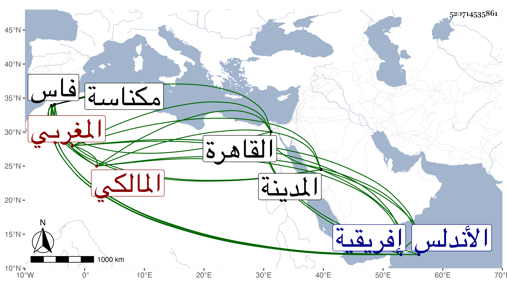

0902Sakhawi.DawLamic.ITO20230111-ara1.EIS1600.520714535861
Biography ID: 520714535861
1055
يحيى بن يوسف بن علي بن محمد المغربي المالكي . ولد ببلاد مكناسة الزيتون في شوال سنة ثمان وثمانين وسبعمائة ، وقدم القاهرة في أعوام بضع عشرة وثمانمائة بعد جولاته في فاس وأعمالها ، ودخل الأندلس وأفريقية وحج وزار المدينة وأقام بالبلاد الشامية سنين ، وتردد إلي كثيرا ونعم الرجل . قاله المقريزي في عقوده وساق عنه عن أبي عبد الله محمد الفاسي في كرامات الآل حكاية ذكرتها في الارتقاء ولم يؤرخ وفاته .
